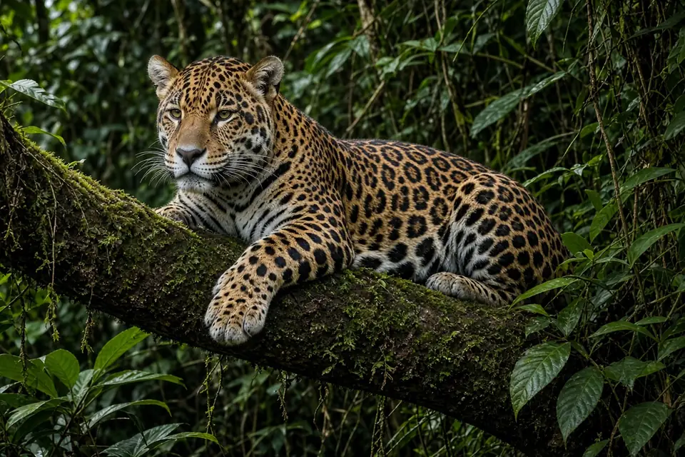

Home › Blog › Which big cat bites the hardest?
Which big cat bites the hardest? Measured bite force compared
In raw force, the tiger and lion bite hardest: a widely cited skull based study estimated their canine bite force above 1,500 newtons. But adjusted for body size, the jaguar comes out on top of the five big cats in that same study, consistent with its unusual habit of killing prey by piercing the skull. A second, more recent study of captive zoo specimens found even higher raw forces and a different order between lion and tiger, a reminder that method and the individual skull measured both matter.
The short answer
| Species | Estimated body mass | Canine bite force | Bite force quotient (size adjusted) |
|---|---|---|---|
| Lion | 294.6 kg | 1,768 N | 112 |
| Tiger | 186.9 kg | 1,525 N | 127 |
| Jaguar | 83.2 kg | 1,014 N | 137 (highest of the five) |
| Cheetah | 29.5 kg | 472 N | 119 |
| Leopard | 43.1 kg | 467 N | 94 (lowest of the five) |
Figures are single specimen, skull based estimates from Wroe, McHenry and Thomason (2005), calculated at the canine teeth using the "dry skull" lever method. The snow leopard was not included in this study.
Why the jaguar punches above its weight
Bite force quotient (BFQ) adjusts raw bite force for body mass, so a small animal and a large one can be compared fairly; a BFQ of 100 is about average for the sample. In the Wroe, McHenry and Thomason study, the jaguar's BFQ of 137 was the highest of the five big cats measured, ahead of the tiger (127), cheetah (119), lion (112) and leopard (94). That fits the jaguar's reputation as an unusually hard biter for its size: the IUCN Cat Specialist Group describes it as the only big cat that regularly kills prey by piercing the skull with its canines, an adaptation that also lets it crack open the armoured shells of turtles and tortoises. See how a jaguar kills its prey.

Why published numbers do not agree
A 2024 study of captive zoo specimens at the Warsaw University of Life Sciences, using the same dry skull method on a small sample of lion and Bengal tiger skulls, reported much higher average canine bite forces: about 2,609 N for the lions studied and about 3,375 N for the tigers, reversing the order found by Wroe and colleagues. The authors note that each estimate depends on the particular skulls measured, that the dry skull method is known to underestimate force compared with direct, in vivo measurements in lions and tigers, and that body mass, sex and individual skull shape all affect the result. Both studies agree on the broader pattern: the big cats of the genus Panthera and the jaguar bite far harder, in absolute terms, than the cheetah or leopard, because bite force scales strongly with body size.
What about the snow leopard?
Neither of the studies above measured a snow leopard specimen, so there is no directly comparable bite force figure for it here. Separate skull and finite element research on the snow leopard's anatomy, published in Science Advances, found that its short, deep skull gives the jaw strong mechanical resistance at the canines, built for a strong but relatively slow bite that suits its main prey, wild mountain sheep and goats. See snow leopard facts for more on its build.
Key takeaways
- Tiger and lion have the highest raw canine bite force among the big cats, estimated above 1,500 newtons in one widely cited study.
- Adjusted for body size, the jaguar bites hardest of the five species measured, matching its unusual skull piercing kill method.
- A newer study of captive specimens found higher absolute forces and reversed the lion and tiger order, showing results vary with the specimens and method used.
- No directly comparable measured bite force exists yet for the snow leopard.
Frequently asked questions
Which big cat has the strongest bite relative to its size?
The jaguar. In a widely cited skull based study its bite force quotient of 137 was the highest of the five big cats measured, ahead of the tiger, cheetah, lion and leopard.
Does a tiger bite harder than a lion?
Studies disagree. One widely cited study put the lion slightly ahead of the tiger in raw canine bite force; a newer study of different, captive specimens found the tiger ahead of the lion. Both are far harder biters than the leopard or cheetah.
What is bite force quotient?
A way to compare bite force fairly across animals of different sizes, calculated from bite force adjusted for body mass. A quotient of 100 is about average for the sample it comes from.
Why does the jaguar bite so hard for its size?
The jaguar is the only big cat that regularly kills prey by piercing the skull with its canines, including armoured prey like turtles, which favours a strong bite relative to its body size.
Cite this page
APA: BigCatWise. (2026, November 18). Which big cat bites the hardest?. https://bigcatwise.com/blog/which-big-cat-bites-the-hardest.html
MLA: "Which big cat bites the hardest?." BigCatWise, 18 Nov. 2026, bigcatwise.com/blog/which-big-cat-bites-the-hardest.html.
Chicago: BigCatWise. "Which big cat bites the hardest?." Last modified November 18, 2026. https://bigcatwise.com/blog/which-big-cat-bites-the-hardest.html.
Please check the date you accessed the page and adjust to your teacher's or journal's style guide.
Sources
- Wroe, McHenry and Thomason (2005) Bite club: comparative bite force in big biting mammals and the prediction of predatory behaviour in fossil taxa, Proceedings of the Royal Society B 272(1563): 619-625. DOI 10.1098/rspb.2004.2986
- Rozycka, Skibniewska, Rajkowski and Skibniewski (2024) Craniometric characteristics of selected Carnivora species kept in captivity in relation to bite force and bending strength of the upper canines, Animals 14(9): 1367. DOI 10.3390/ani14091367
- Science Advances: Insights on the evolution and adaptation toward high-altitude and cold environments in the snow leopard lineage. DOI 10.1126/sciadv.adp5243
- IUCN SSC Cat Specialist Group: Jaguar
Figures are rounded summaries of the sources above. Wild populations are hard to count, so estimates change as new surveys are published.